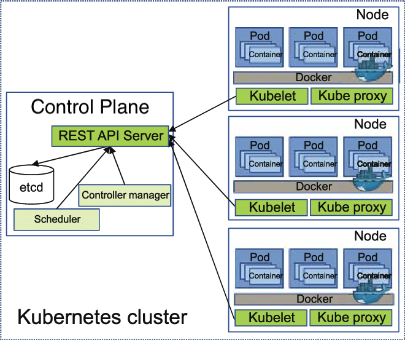
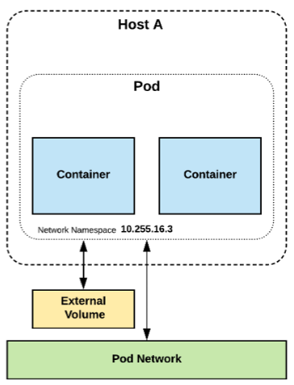
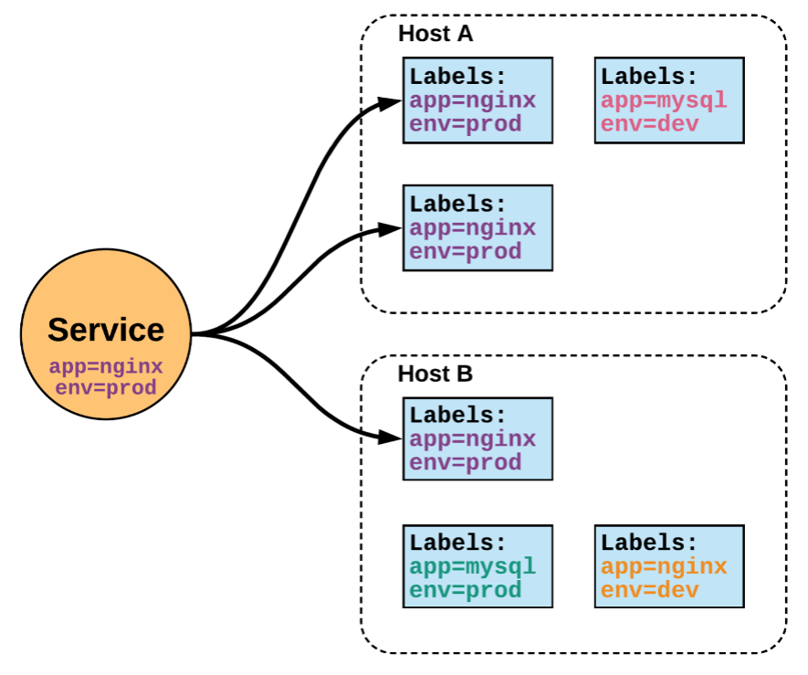

Kubernetes is a container management system
It runs and manages containerized applications on a cluster
What does that really mean?
Let's imagine that we have a 3-tier hotel booking app:
web frontend
API backend
database (that we will keep out of Kubernetes for now)
We have built images for our frontend and backend components
(e.g. with Dockerfiles and docker build)
We are running them successfully with a local environment
(e.g. with Docker Compose)
Let's see how we would deploy our app on Kubernetes!
Start 5 containers using image hotelapp/profile
hotelapp/profile
Place an internal load balancer in front of these containers
Start 10 containers using image hotelapp/frontend
hotelapp/frontend
Place a public load balancer in front of these containers
It's summertime, traffic spikes, grow our cluster and add containers
New release! Replace my containers with the new image hotelapp/frontend
Keep processing requests during the upgrade; update my containers one at a time
Basic autoscaling
Blue/green deployment, canary deployment
Long running services, but also batch (one-off) jobs
Overcommit our cluster and evict low-priority jobs
Run services with stateful data (databases etc.)
Fine-grained access control defining what can be done by whom on which resources
Integrating third party services (service catalog)
Automating complex tasks (operators)
Ha ha ha ha
OK, I was trying to scare you, it's much simpler than that

The nodes executing our containers run a collection of services:
a container Engine (typically Docker)
kubelet (the "node agent")
kube-proxy (a necessary but not sufficient network component)
Nodes were formerly called "minions"
(You might see that word in older articles or documentation)
The Kubernetes logic (its "brains") is a collection of services:
the API server (our point of entry to everything!)
core services like the scheduler and controller manager
etcd (a highly available key/value store; the "database" of Kubernetes)
Together, these services form the control plane of our cluster
The control plane is also called the "master"
We will interact with our Kubernetes cluster through the Kubernetes API
The Kubernetes API is (mostly) RESTful
It allows us to create, read, update, delete resources
A few common resource types are:
node (a machine — physical or virtual — in our cluster)
pod (group of containers running together on a node)
service (stable network endpoint to connect to one or multiple containers)
Atomic unit or smallest “unit of work” of Kubernetes
One or MORE containers that share volumes, a network namespace, and are a part of a single context

Unified method of accessing the exposed workloads of Pods
Durable resource
static cluster IP
static namespaced DNS name

Our cluster has multiple nodes named kube1, kube2, etc.
kube1
kube2
We will do everything from kube1
We have SSH access to the other nodes, but won't need it
(but we can use it for debugging, troubleshooting, etc.)
kubectl is (almost) the only tool we'll need to talk to Kubernetes
kubectl
It is a rich CLI tool around the Kubernetes API
(Everything you can do with kubectl, you can do directly with the API)
On our machines, there is a ~/.kube/config file with:
~/.kube/config
the Kubernetes API address
the path to our TLS certificates used to authenticate
You can also use the --kubeconfig flag to pass a config file
--kubeconfig
Or directly --server, --user, etc.
--server
--user
We often start managing servers with SSH
(installing packages, troubleshooting ...)
At scale, it becomes tedious, repetitive, error-prone
Instead, we use config management, central logging, etc.
In many cases, we still need SSH:
as the underlying access method (e.g. Ansible)
to debug tricky scenarios
to inspect and poke at things
kubectl get
Let's look at our Node resources with kubectl get!
Node
Log into kube1
Check that all nodes are Ready:
Ready
kubectl get nodes
First things first: we cannot run a container
We are going to run a pod, and in that pod there will be a single container
In that container in the pod, we are going to run a simple ping command
ping
kubectl run
kubectl run is convenient to start a single pod
We need to specify at least a name and the image we want to use
Optionally, we can specify the command to run in the pod
Let's ping the address of localhost, the loopback interface:
localhost
kubectl run pingpong --image alpine ping 127.0.0.1
The output tells us that a Pod was created:
$ pod/pingpong created
Let's use the kubectl logs command
kubectl logs
It takes a Pod name as argument
Unless specified otherwise, it will only show logs of the first container in the pod
(Good thing there's only one in ours!)
View the result of our ping command:
kubectl logs pingpong
kubectl gives us a simple command to scale a workload:
kubectl scale TYPE NAME --replicas=HOWMANY
Let's try it on our Pod, so that we have more Pods!
Try to scale the Pod:
kubectl scale pod pingpong --replicas=3
We get the following error, what does that mean?
Error from server (NotFound): the server could not find the requested resource
We cannot "scale a Pod"
(that's not completely true; we could give it more CPU/RAM)
If we want more Pods, we need to create more Pods
(i.e. execute kubectl run multiple times)
There must be a better way!
(spoiler alert: yes, there is a better way!)
We are going to create a ReplicaSet
(= set of replicas = set of identical pods)
In fact, we will create a Deployment, which itself will create a ReplicaSet
Why so many layers? We'll explain that shortly, don't worry!
Let's create a Deployment instead of a single Pod
Create the Deployment; pay attention to the --:
kubectl create deployment pingpong --image=alpine -- ping 127.0.0.1
The -- is used to separate:
--
"options/flags of kubectl create
command to run in the container
Check the resources that were created:
kubectl get all
Note: kubectl get all is a lie. It doesn't show everything.
(But it shows a lot of "usual suspects", i.e. commonly used resources.)
NAME READY STATUS RESTARTS AGE pod/pingpong 1/1 Running 0 33s pod/pingpong-fc7cf666d-5chdk 1/1 Running 0 7s NAME READY UP-TO-DATE AVAILABLE AGE deployment.apps/pingpong 1/1 1 1 8s NAME DESIRED CURRENT READY AGE replicaset.apps/pingpong-fc7cf666d 1 1 1 8s
Our new Pod is not named pingpong, but pingpong-xxxxxxxxxxx-yyyyy.`
pingpong
pingpong-xxxxxxxxxxx-yyyyy
We have a Deployment named pingpong, and an extra ReplicaSet, too. What's going on?
ReplicaSet
We have the following resources:
deployment.apps/pingpong
This is the Deployment that we just created.
replicaset.apps/pingpong-xxxxxxxxxx
This is a Replica Set created by this Deployment.
pod/pingpong-xxxxxxxxxx-yyyyy
This is a pod created by the Replica Set.
Let's explain what these things are.
Can have one or multiple containers
Runs on a single node
(Pod cannot "straddle" multiple nodes)
Pods cannot be moved
(e.g. in case of node outage)
Pods cannot be scaled horizontally
(except by manually creating more Pods)
A Pod is not a process; it's an environment for containers
it cannot be "restarted"
it cannot "crash"
The containers in a Pod can crash
They may or may not get restarted
(depending on Pod's restart policy)
If all containers exit successfully, the Pod ends in "Succeeded" phase
If some containers fail and don't get restarted, the Pod ends in "Failed" phase
Set of identical (replicated) Pods
Defined by a pod template + number of desired replicas
If there are not enough Pods, the Replica Set creates more
(e.g. in case of node outage; or simply when scaling up)
If there are too many Pods, the Replica Set deletes some
(e.g. if a node was disconnected and comes back; or when scaling down)
We can scale up/down a Replica Set
we update the manifest of the Replica Set
as a consequence, the Replica Set controller creates/deletes Pods
Replica Sets control identical Pods
Deployments are used to roll out different Pods
(different image, command, environment variables, ...)
When we update a Deployment with a new Pod definition:
a new Replica Set is created with the new Pod definition
that new Replica Set is progressively scaled up
meanwhile, the old Replica Set(s) is(are) scaled down
This is a rolling update, minimizing application downtime
When we scale up/down a Deployment, it scales up/down its Replica Set
Let's try kubectl scale again, but on the Deployment!
Scale our pingpong deployment:
kubectl scale deployment pingpong --replicas 3
Note that we could also write it like this:
kubectl scale deployment/pingpong --replicas 3
Check that we now have multiple pods:
kubectl get pods
The deployment pingpong watches its replica set
The replica set ensures that the right number of pods are running
What happens if pods disappear?
In a separate window, watch the list of pods:
watch kubectl get pods
Destroy the pod currently shown by kubectl logs:
kubectl delete pod pingpong-xxxxxxxxxx-yyyyy
kubectl delete pod terminates the pod gracefully
kubectl delete pod
(sending it the TERM signal and waiting for it to shutdown)
As soon as the pod is in "Terminating" state, the Replica Set replaces it
But we can still see the output of the "Terminating" pod in kubectl logs
Until 30 seconds later, when the grace period expires
The pod is then killed, and kubectl logs exits
What happens if we delete a standalone Pod?
(like the first pingpong Pod that we created)
Delete the Pod:
kubectl delete pod pingpong
No replacement Pod gets created because there is no controller watching it
That's why we will rarely use standalone Pods in practice
(except for e.g. punctual debugging or executing a short supervised task)
Labels are key/value pairs attached to objects
Labels can be added, removed, changed, dynamically
Let's look up the Deployment that was created
kubectl describe deployment pingpong
We see one label:
Labels: app=pingpong
This is added by kubectl create deployment
kubectl create deployment
Let's look up the Pod that was created and check it too
kubectl describe pod pingpong-xxxxxxxxxx-yyyyy
We see two labels:
Labels: app=pingpong pod-template-hash=xxxxxxxxxx
app=pingpong comes from kubectl create deployment too
app=pingpong
pod-template-hash was assigned by the Replica Set
pod-template-hash
A selector is an expression matching labels
It will restrict a command to the objects matching at least all these labels
List all the pods with at least app=pingpong:
kubectl get pods --selector=app=pingpong
List all the pods with a label app, regardless of its value:
app
kubectl get pods --selector=app
The easiest method is to use kubectl label
kubectl label
Set a label on the pingpong Deployment:
kubectl label deployment pingpong version=v1
Check it out:
If a selector has multiple labels, it means "match at least these labels"
Example: --selector=app=frontend,release=prod
--selector=app=frontend,release=prod
--selector can be abbreviated as -l (for labels)
--selector
-l
We can also use negative selectors
Example: --selector=app!=clock
Selectors can be used with most kubectl commands
Examples: kubectl delete, kubectl label, ...
kubectl delete
We can use the --show-labels flag with kubectl get
--show-labels
List all the labels that we have on pods:
kubectl get pods --show-labels
We can now deploy our app (using images from DockerHub)
kubectl create deployment frontend --image=hvolos01/hotel_app_frontend_single_node_memdb:latest -- frontend kubectl create deployment profile --image=hvolos01/hotel_app_frontend_single_node_memdb:latest -- profile kubectl create deployment search --image=hvolos01/hotel_app_frontend_single_node_memdb:latest -- search kubectl create deployment geo --image=hvolos01/hotel_app_frontend_single_node_memdb:latest -- geo kubectl create deployment rate --image=hvolos01/hotel_app_frontend_single_node_memdb:latest -- rate
If we wanted to deploy images from another registry ...
... Or with a different tag ...
... We could use the following snippet:
REGISTRY=hvolos01 TAG=latest for SERVICE in frontend profile search geo rate; do kubectl create deployment $SERVICE --image=$REGISTRY/$SERVICE:$TAG -- ${SERVICE} done
After waiting for the deployment to complete, let's look at the logs!
(Hint: use kubectl get deploy -w to watch deployment events)
kubectl get deploy -w
Look at some logs:
kubectl logs deploy/profile kubectl logs deploy/frontend
profile is fine ... But not frontend
profile
frontend
Oh right! We forgot to expose
expose
Four deployments need to be reachable by others: search, geo, profile, rate
geo
rate
frontend will be dealt with later
kubectl expose deployment profile --port 8081 kubectl expose deployment search --port 8082 kubectl expose deployment geo --port 8083 kubectl expose deployment rate --port 8084
Now we would like to access the Web UI
We will expose it with a NodePort
Create a NodePort service for the Web UI:
kubectl expose deployment frontend --type=NodePort --port 8080
Check the port that was allocated:
kubectl get svc
We can now connect to any node, on the allocated node port, to view the web UI
Open the web UI in your browser (http://node-ip-address:3xxxx/)
In this part, we will:
$REGISTRY/servicename
We'll self-host the registry because it's the most generic solution for this tutorial.
We need to run a registry container
registry
It will store images and layers to the local filesystem (but you can add a config file to use S3, Swift, etc.)
Docker requires TLS when communicating with the registry
unless for registries on 127.0.0.0/8 (i.e. localhost)
127.0.0.0/8
or with the Engine flag --insecure-registry
--insecure-registry
Our strategy: publish the registry container on a NodePort, so that it's available through 127.0.0.1:xxxxx on each node
127.0.0.1:xxxxx
We will deploy a registry container, and expose it with a NodePort
Create the registry service:
kubectl create deployment registry --image=registry
Expose it on a NodePort:
kubectl expose deploy/registry --port=5000 --type=NodePort
We need to find out which port has been allocated
View the service details:
kubectl describe svc/registry
Get the port number programmatically:
NODEPORT=$(kubectl get svc/registry -o json | jq .spec.ports[0].nodePort) REGISTRY=127.0.0.1:$NODEPORT
A convenient Docker registry API route to remember is /v2/_catalog
/v2/_catalog
View the repositories currently held in our registry:
curl $REGISTRY/v2/_catalog
We should see:
{"repositories":[]}
We can retag a small image, and push it to the registry
Make sure we have the busybox image, and retag it:
docker pull busybox docker tag busybox $REGISTRY/busybox
Push it:
docker push $REGISTRY/busybox
Let's use the same endpoint as before
Ensure that our busybox image is now in the local registry:
The curl command should now output:
{"repositories":["busybox"]}
We are going to use a convenient feature of Docker Compose
Build and push the images:
export REGISTRY export TAG=v0.1 docker-compose -f docker-compose.yml build docker-compose -f docker-compose.yml push
Let's have a look at the docker-compose.yml file while this is building and pushing.
docker-compose.yml
version: "3" services: frontend: build: . image: ${REGISTRY-127.0.0.1:5000}/hotel_app_frontend_single_node_memdb entrypoint: frontend container_name: 'hotel_app_frontend' ports: - "8080:8080" restart: always ... jaeger: image: jaegertracing/all-in-one:latest
Just in case you were wondering ... Docker "services" are not Kubernetes "services".
All our images should now be in the registry
Re-run the same curl command as earlier:
curl
In these slides, all the commands to deploy Hotel Map will use a $REGISTRY environment variable, so that we can quickly switch from the self-hosted registry to pre-built images hosted on the Docker Hub. So make sure that this $REGISTRY variable is set correctly when running these commands!
We can follow the same steps we used to deploy from pre-built images